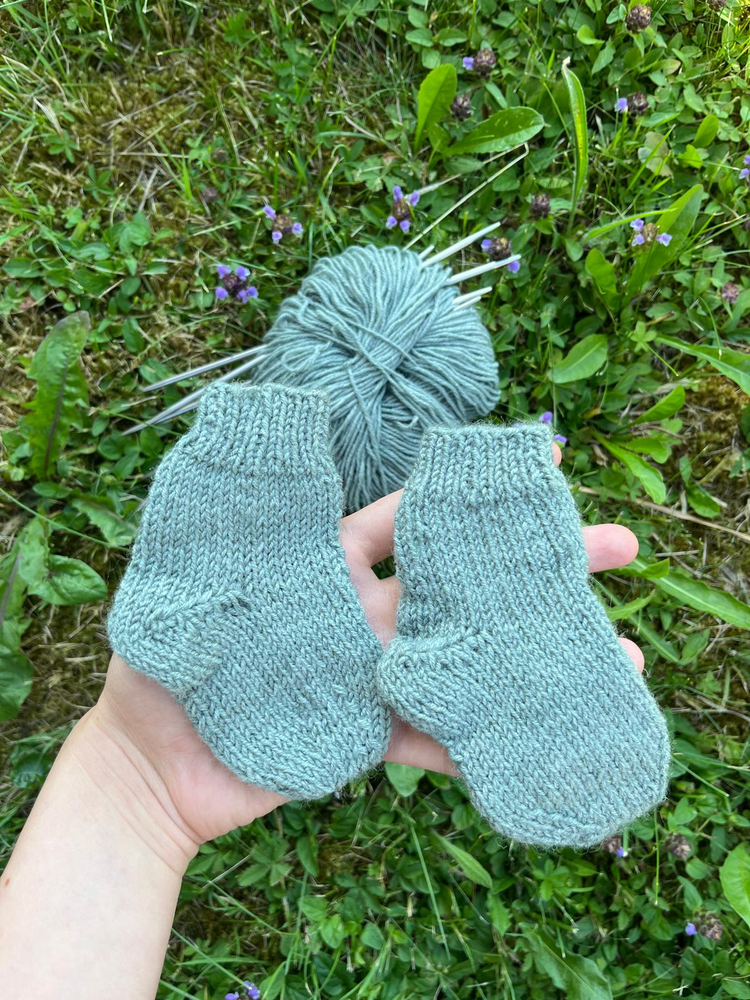

Un gomitolo alla volta
Calzine di Lana
Morbide calzine lavorate a mano. Scegli il colore del filato e raccontami come le immagini.

su richiesta
Lavorate con cura
Piccole, morbide, uniche
Un paio di calzine realizzate a mano, punto dopo punto. La misura, il filato e ogni dettaglio si concordano insieme prima di iniziare.
- Lavorazione: fatta a mano
- Misura: da concordare
- Prezzo: su richiesta
Scegli il colore del filato:
Colore scelto: Panna
La tonalità finale viene concordata in base ai filati disponibili.